Home
Welcome to our home page.
Peacebuilding in the Digital Age: Leveraging Instagram for Global Peace Efforts
Forget the curated perfection of selfies and foodstagrams. In today's hyper-connected world, a new frontier in peacebuilding has emerged: Instagram.
This billion-user platform transcends borders, allowing us to share powerful stories and posts that land divides. However, the question remains: how precisely can a single photograph or video contribute to global peace efforts? From raising awareness about conflicts to fostering dialogue and and cultivate understanding across diverse communities, Instagram offers a unique space for visual storytelling and real-time connection. Join us as we delve into the dynamic ways Instagram is reshaping peacebuilding, and discover how you, too, can be part of this movement. But beware, this powerful tool comes with its own pitfalls – misinformation and harmful content that lurk online. Our website will help you to navigate these challenges and unlock Instagram's true potential as a force for global peace.
Technology
Understanding the technological aspects of Instagram can enhance its effectiveness as a peacebuilding tool:
- Features and algorithms that promote engagement and visibility.
- Tools for managing content and interactions safely.
- Technological advancements that could shape the future of digital peacebuilding.
Opportunities
Instagram provides numerous opportunities for promoting peace and fostering global understanding. This section explores:
- How visual storytelling can highlight peace initiatives.
- The role of influencers and ambassadors in spreading positive messages.
- Campaigns and movements that have successfully utilized Instagram for peacebuilding.
Risks
While Instagram has many benefits, it also poses certain risks that need to be addressed:
- The spread of misinformation and its impact on peace efforts.
- The potential for hate speech and extremist content.
- Privacy and security concerns for peace activists using the platform.
Choices
Effective peacebuilding on Instagram involves making informed choices about content and strategy. This section covers:
- Strategies for creating engaging and impactful content.
- Choices around collaboration with influencers and organizations.
- Ethical considerations in representing conflicts and peace efforts.
Group 51
Our dedicated team - Group 51 has worked diligently to bring this project to life. Here are the contributors who have made significant contributions to this website:
Fatema Hashmi (Student ID: 23195092)
- Fatema has developed the introductory content, also exploring opportunities and risks with the help of graphs and statistics and real-life proofs of pictures associated with using Instagram for peace efforts. Her research provides a balanced view of the potential and challenges of digital peacebuilding via the help of Instagram. She has also provided her efforts in the References tab.
Krishna Patel (Student ID: 22169248)
- Krishna has conducted extensive research on the technological aspects of Instagram, providing valuable insights into how we came to choose the topic and how the technology of Instagram can be leveraged for peacebuilding.
Yatharth Haldar (Student ID: 22185484)
- Yatharth has designed and developed the website providing features like navigating, reading, edited the content for the website "Peacebuilding in the digital era". Additionally, Yatharth's research on the topic of choices offers a comprehensive understanding of the people's decisions and strategies and how that has enhanced the impact of peace initiatives on Instagram and made a contribution in the References tab.
Technology
Patrolling and Prohibiting Extremist Online Groups
Patrolling and prohibiting extremist online groups is not equivalent to tracking people's correspondence and travel schedules, monitoring the internet, or checking their accounts to see if they are affiliated with terrorist organisations. Monitoring young people's WhatsApp, TikTok, and Instagram accounts, checking everyone's emails, and censoring the internet would be costly and impractical ways to investigate if they are considering joining these organisations. Furthermore, potential third-generation terrorists are not identified by any demographic trend (Simpson, 2022).
Eliminating Discrimination Online
In particular, eliminating discrimination online is an important objective for numerous online peacebuilding projects, with the goal of strengthening bonds and diminishing the probability of conflict between various demographics. These initiatives rely on the idea that while social media contributes to and often causes intercommunal conflict in the 21st century, it can also offer possibilities for resolution.
Digital Peacebuilding Initiatives
Digital peacebuilding practitioners and academics problematise intercommunal conflict as driven by hateful language shared on social media. Against this understanding, countering hate speech initiatives can advocate for technology-centred solutions, such as social media monitoring and analysis (Hirblinger el al., 2023).
CASE STUDY: CAMEROON
Social media is a major channel for spreading both "peaceful" and "inflammatory speech," according to the United States Institute of Peace's (USIP) PeaceTech Lab (PTL). This is why PTL supports digital peacebuilding initiatives in nations such as Cameroon, which is known for violent extremism, including kidnappings, religious conflicts, and "jungle justice." PTL's intervention focused on tackling violence and conflict online rather than addressing the non-technological aspects of it. A "hands-on workshop on countering online hate speech" was organised by PTL's local partner, the Local Youth Corner Cameroon (LOYOC), gathering a variety of stakeholders.
By reinforcing a specific understanding of conflict—intercommunal conflict expressed through online hate speech—this example shows how digital peacebuilding initiatives coproduce problems and solutions aligned with tech-supported conflict-resolution strategies.
Effectiveness and Limitation of Digital Peacebuilding
A small amount of empirical research on digital peacebuilding programmes indicates that while technology usage may be somewhat effective, it often replicates and relies upon traditional, locally driven peacebuilding methods (Hirblinger et al., 2023). It is also critical to recognise that the consequences of digital peacebuilding agendas are geographically varied and influenced by issues unrelated to digitalisation.
Dependency on Local Structures
Digital peacebuilding projects may depend on established governing organisations, such as local governments and traditional authorities, to gather, evaluate, and act upon digitally produced data, especially in settings with restricted digital access and literacy. Many projects start on the periphery of social and political movements, borrowing advocacy methods and approaches, and maintaining close connections to common political objectives (Hirblinger et al., 2023).
Ideational Nature of Digital Peacebuilding
Most digital peacebuilding initiatives are ideational, interacting with data, knowledge, stories, and other elements. Some claim to reduce or avoid violent confrontation by influencing decisions and actions, while others aim to enhance livelihoods and community ties. Distinguishing between the "digital" and "analogue" or "online" and "offline" realms can be deceptive when examining the social impacts of digital peacebuilding (Hirblinger et al., 2023).
Social Media and its Impact
INSTAGRAM: A CASE STUDY
Instagram, a visual-oriented social networking site, allows users to capture images and videos and share them on other platforms. Many academics have studied Instagram's evolution from various angles. Instagram is the social network with the fastest rate of growth in the world, illustrating the role of social media in contemporary culture. It helps users share their photos and videos on other platforms in addition to allowing them to take them. Major social networking sites like Facebook, Twitter, Instagram, Weibo, and Myspace now occupy the majority of people's free time and are an essential component of everyday life (Yang, 2021).
Between 2010 and 2012, when Facebook acquired Instagram, the social media platform dedicated two years to creating a narrative about its growth (Awwal et al., 2023).
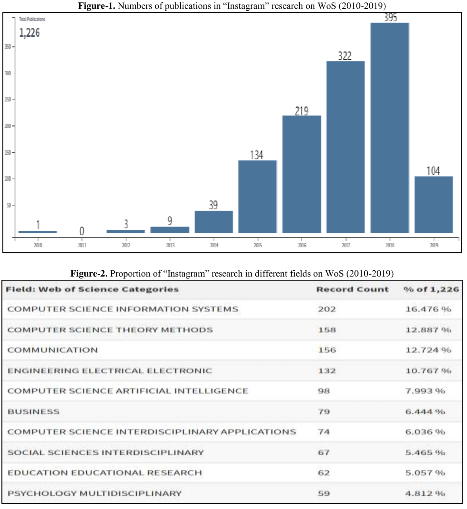
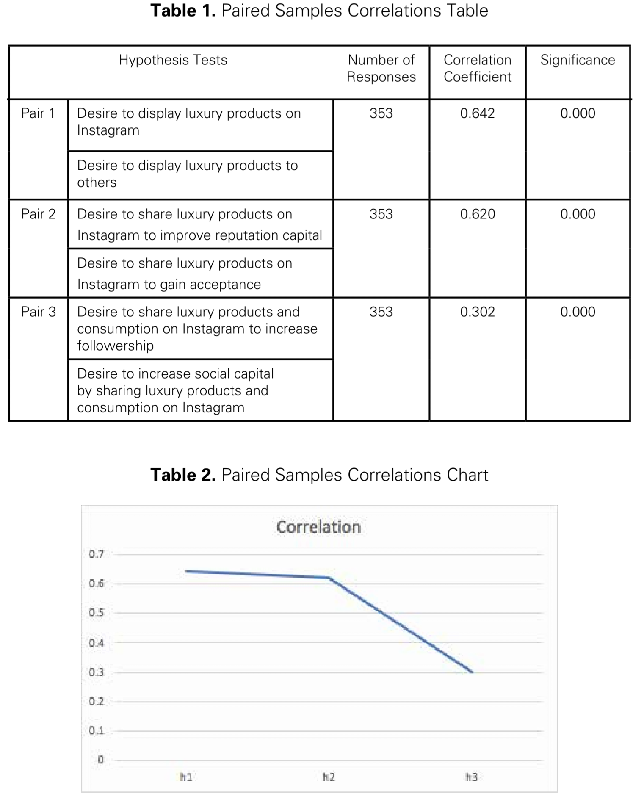
Opportunity
Raising Awareness on Instagram: A Deep Dive
Visual storytelling on Instagram is a potent tool for raising awareness. During the Black Lives Matter protests of 2020, powerful images and videos, along with hashtags like #BlackLivesMatter, sparked global conversations. For instance, #BlackoutTuesday saw 28 million people posting plain black squares. This movement effectively highlighted issues of police violence and racial inequality, leading to widespread protests and policy reforms. Utilizing visual formats like photos, videos, Stories, Reels, and infographics can effectively engage audiences and drive meaningful change.
Leveraging global reach on social media is key for raising awareness on a global scale. It enables organizations and individuals to transcend geographical boundaries, reaching diverse audiences worldwide. By utilizing features like hashtags, geotagging, translation tools, and targeted advertising, users can ensure their messages resonate across different cultures and languages.
Take the ALS Ice Bucket Challenge raising over $220 million, underscores the potential of global reach in creating meaningful impact and fostering cross-cultural understanding. Harnessing this potential can contribute to building a more connected and empathetic world.
Viral campaigns on Instagram leverage its visual-centric nature and user-generated content to reach millions globally, sparking conversations and inspiring action. Take the #ChallengeAccepted campaign as an example: it aimed to promote women's empowerment and gender equality, with over 3 million photos uploaded. Participants shared black-and-white selfies, nominating others to join in, fostering solidarity and highlighting important social issues like femicide. These campaigns demonstrate how Instagram's platform can be a powerful tool for raising awareness, sparking conversations, and inspiring meaningful action.
On Instagram, influencers and educators play a crucial role in raising awareness about social issues by leveraging their platforms to educate, inspire, and mobilize large audiences. Their authenticity, credibility, and relatability enable them to effectively communicate messages and drive action. Through collaborations, workshops, and advocacy campaigns, they create impactful content that inspires positive change.
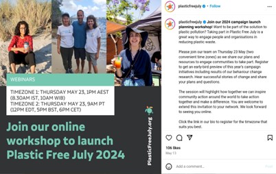
Facilitating Cross-Cultural Dialogue on Instagram: Building Bridges Through Stories
Connecting diverse groups on Instagram is crucial for raising awareness about social issues and fostering empathy. Through features like global reach and diverse user bases, the platform facilitates exchanges of ideas and experiences. Initiatives like the Visible Women campaign showcase diverse talents and perspectives, enriching conversations. These efforts promote inclusivity and understanding, ultimately leveraging Instagram's potential to create meaningful connections across borders and cultures.
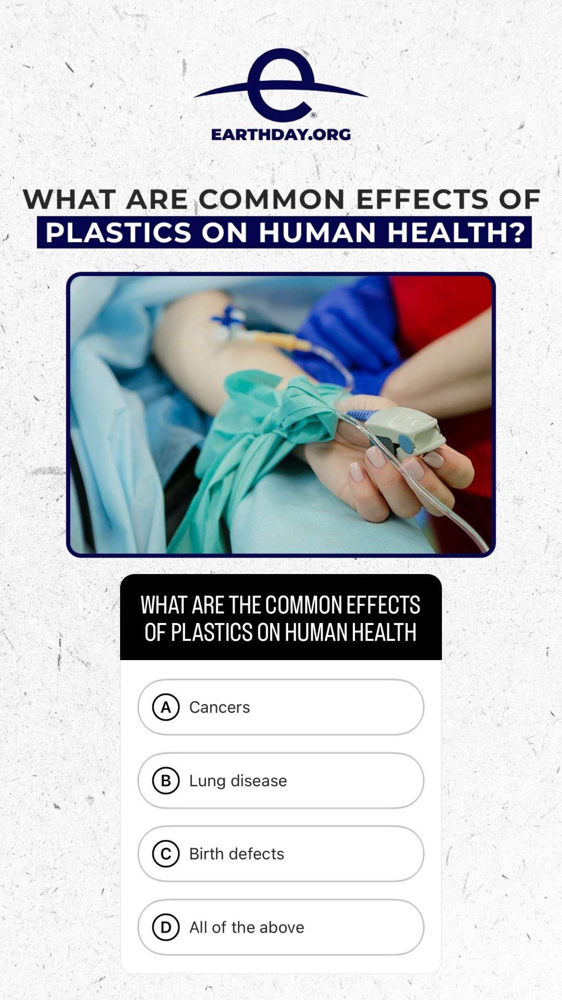
Interactive features on Instagram are essential for engaging users and driving action. From polls to live Q&A sessions, these tools foster meaningful connections and encourage participation. For instance, the Earth Day Challenge 2023 involved interactive quizzes, polls, and live sessions on environmental sustainability. Participants shared their results and pledges, while interactive stickers and filters added engaging visual elements. These features spark conversations, inspire action, and promote positive social change.
Instagram: A Real-Time Lifeline in Crisis Response
Immediate communication on Instagram enables rapid dissemination of information, updates, and alerts to a large audience in real-time. This fosters awareness and engagement around ongoing events, breaking news, and social issues. For example, after the Beirut explosion, Instagram became a vital platform for reconnecting loved ones and organizing relief efforts. Humanitarian organizations, influencers, and activists used Instagram to share vital information, raise funds, and advocate for systemic reforms. Hashtags like #BeirutExplosion sparked global conversations and calls for action, demonstrating the power of immediate communication to mobilize support and drive positive social change.
Grassroots activism on Instagram mobilizes communities for social change. For instance, the #FreePalestine movement sheds light on the Israeli-Palestinian conflict, with over 195,000 posts and millions of views. Grassroots activism amplifies voices, challenges oppression, and promotes inclusivity, making tangible impacts for social justice.
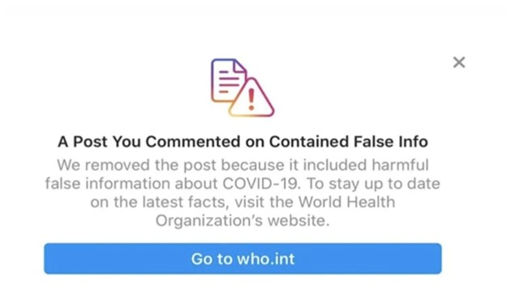
"Fact-checking and countering misinformation on Instagram are vital for promoting accuracy in social media discourse. For example, during the COVID-19 pandemic, the World Health Organization (@who) collaborated with Instagram to combat misinformation. Instagram reported taking down over 12 million instances of harmful misinformation about vaccines and COVID-19 since the pandemic began. By sharing accurate updates and implementing fact-checking labels, these efforts help prevent the spread of false information and promote informed public health practices."
Support and donations on Instagram leverage the platform's global reach to rally resources for social causes. For example, Save the Children launched a fundraiser to aid children in conflict-affected regions, raising $1.65M through Instagram. By sharing compelling stories and utilizing fundraising tools, they mobilized support from influencers and users worldwide. These initiatives demonstrate Instagram's power to make a tangible impact and raise awareness about pressing social issues.
How Instagram Empowers Youth Movements: A Look at Inspiring Content, Visibility, and Role Models
Youth-led movements on Instagram empower young activists to advocate for social change. For example, Fridays for Future, initiated by Greta Thunberg, mobilizes young people worldwide to demand climate action. Through hashtags, digital events, and compelling storytelling, these movements amplify voices and drive meaningful change.
The visibility of role models on Instagram is crucial for inspiring and influencing positive change. For example, Malala Yousafzai (@malala) uses her platform to advocate for girls' education and human rights. By sharing powerful messages and highlighting global challenges, role models like Malala contribute to building a more inclusive and compassionate world.
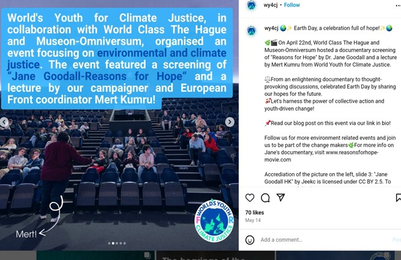
Youth-oriented content on Instagram is designed to engage and empower young audiences, typically aged between 13 to 24 years old. For example, Youth For Climate (@youthforclimate) launched the #ClimateActionChallenge, calling on young people to share their creative ideas and actions for combating climate change. This interactive campaign featured eco-friendly lifestyle tips, climate change facts, and calls to action, empowering young activists to make a difference.
Risk
Misinformation and Disinformation
Misinformation on Instagram undermines awareness efforts, eroding credibility and causing confusion. Ensuring accuracy is crucial for maintaining campaign integrity and trust. Strategies like fact-checking, using reliable sources, and educating followers help combat misinformation, fostering a more informed audience and a healthier online environment. During the 2020 U.S. Presidential Election, misinformation on platforms like Instagram raised doubts about the election's integrity. Instagram implemented measures such as warning labels and fact-checking with organizations like FactCheck.org and PolitiFact. Efforts, including a study with 35,000 participants incentivized to take breaks from Instagram, aimed to curb misinformation's impact. These measures ensured access to credible information, contributing to an informed electorate and upholding the democratic process. To mitigate misinformation, prioritize accuracy, verify information, and foster a trustworthy online environment for awareness campaigns.
Instagram plays a significant role in global political communication, shaping discussions and media coverage. This study examines how the platform impacts selective exposure and avoidance, especially among young adults. Echo chambers, such as political and cultural ones, limit exposure to diverse perspectives.
- Political Echo Chambers: A progressive liberal user exclusively follows left-leaning sources, reinforcing their beliefs and limiting exposure to diverse political views.
- Cultural Echo Chambers:A user celebrates their cultural heritage but only engages with content related to their identity, restricting exposure to diverse cultural perspectives.
Combat echo chambers by engaging with diverse viewpoints and critically evaluating information for a more inclusive online discourse.
Clicktivism on Instagram involves supporting causes through online actions like liking and sharing, raising awareness but also having drawbacks:
- Superficial Engagement: Users may engage without understanding the cause deeply.
- Slacktivism: Clicking may foster a belief that it's enough, without real action.
- Oversimplification: Complex issues are reduced to hashtags, losing nuance.
Impacts include diluted messaging, lack of accountability, and diminished activism. To mitigate:
- Educate on informed activism.
- Encourage deeper offline engagement.
- Complement clicktivism with real-world action.
Following the 2015 Paris attacks, #PrayForParis trended on Instagram, with over 70 million users sharing prayers in solidarity, despite criticism of clicktivism. This event highlighted Instagram's role as a platform for global expressions of solidarity and empathy, despite the risks of superficial engagement.
Instagram's dominance is evident, with 60% of users constantly connected. This fosters short attention spans, posing challenges for awareness efforts. To counteract this, strategies such as visually appealing content and interactive features are crucial. Joel Sartore's Photo Ark initiative, featured on National Geographic, aims to photograph every species in zoos and sanctuaries worldwide. The campaign utilizes captivating visuals and informative captions, driving conservation efforts. National Geographic sustains audience interest with interactive content like polls and quizzes, fostering meaningful conversations about wildlife conservation on Instagram.
Cyberbullying and Online Harassment
Amplified hostilities on Instagram, including harassment and misinformation, pose significant risks to social media awareness efforts, leading to harmful narratives and community polarization. To mitigate these risks, strategies like robust community guidelines and digital literacy promotion are essential. In 2021, a social media campaign highlighting immigrant experiences in the US faced disruption due to targeted harassment on Instagram, deterring engagement and diminishing the campaign's reach (Amnesty International, 2018).
During a 2023 climate change awareness campaign, misinformation on Instagram aimed to undermine advocacy efforts, with false stories 70% more likely to be retweeted than true ones (Vosoughi, Roy, & Aral, 2018). Vigilance and proactive measures are necessary to address hostile behavior on social media and create a conducive environment for awareness-raising.
Targeting activists for social media awareness campaigns on Instagram carries risks, including limited reach beyond activist networks and potential disengagement due to familiar content. Mitigation strategies include diversifying audience targeting and tailoring messaging for different awareness levels. During the Occupy Wall Street protests in 2011, activists used Instagram to rally against income inequality and corporate greed. While successful in engaging activists, the movement faced criticism for preaching to the choir, hindering its impact on wider discourse and policy change (Smith, 2012). Similarly, the #MeToo movement, starting on platforms like Instagram in 2017, aimed to highlight sexual harassment and assault. While empowering survivors, it faced criticism for mainly reaching sympathetic audiences, possibly limiting its impact on systemic reform (Johnson, 2018).
Both movements struggled to engage broader audiences, highlighting the need for a balanced approach prioritizing inclusivity and collaboration to maximize effectiveness (Brown & Williams, 2020).
Cultural Awareness in the Digital Age: Combatting Insensitivity Online
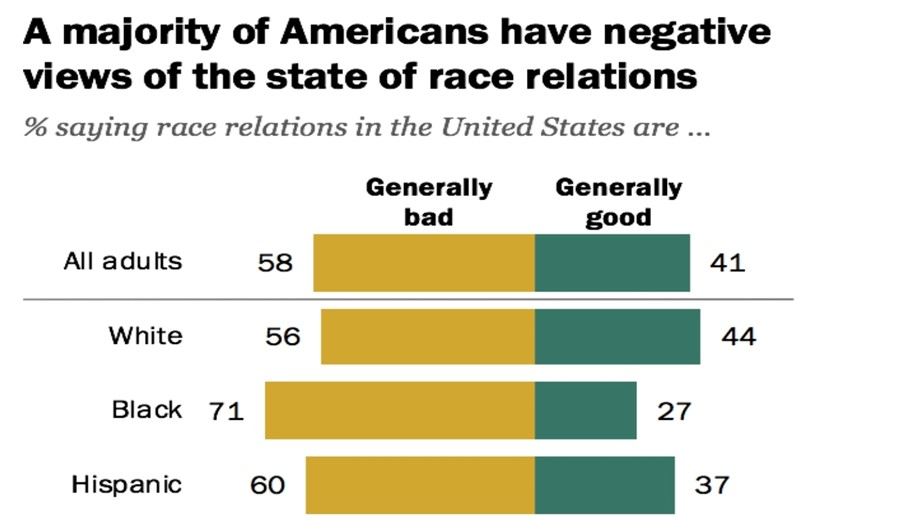
Stereotyping and misrepresentation on Instagram perpetuate harmful biases and alienate marginalized communities. Strategies to mitigate these risks include thorough research, inclusive language, collaboration with diverse creators, and content moderation (APA, n.d.). In 2017, Dove faced criticism for an ad depicting a Black woman transforming into a white woman, sparking outrage for perpetuating racist stereotypes (Pew Research Center, 2019).
At Coachella, cultural appropriation instances are common, with attendees often wearing cultural symbols without understanding their significance, leading to commodification and distortion of cultural symbols (Young, 2008).
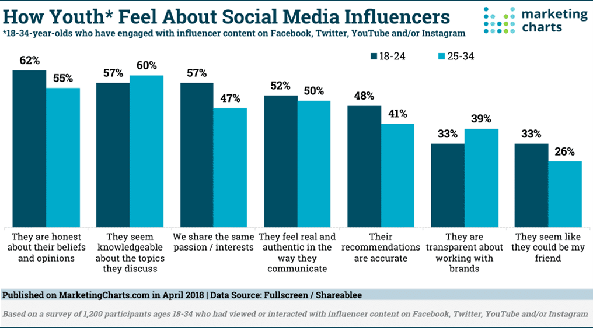
On Instagram, influencers sometimes misrepresent mental health, glamorizing issues like eating disorders or self-harm, contributing to stigma and trivializing experiences (APA, n.d.).
To maximize the effectiveness of awareness campaigns, prioritize diversity, equity, and inclusion, actively challenge stereotypes, and strive for accurate representation.

Insensitive content on Instagram, including hate speech and misinformation, undermines credibility and harms marginalized communities. A survey found that 53% of Americans experience online hate, often on platforms like Instagram. Exposure to such content can increase stress and depression, especially among vulnerable users. Notable examples, like British presenter Caroline Flack's cyberbullying, illustrate the severe impact on mental health.
The Dolce & Gabbana campaign sparked outrage, leading to a 20% sales drop in China and tarnishing the brand's global reputation. Misinformation about COVID-19 also spreads rapidly on Instagram, and Asian women face disproportionate online harassment. To address these risks, clear guidelines and content moderation are crucial, alongside fostering inclusivity and respect. Users should prioritize responsible content creation, advocate for diversity, and work towards a respectful online environment.
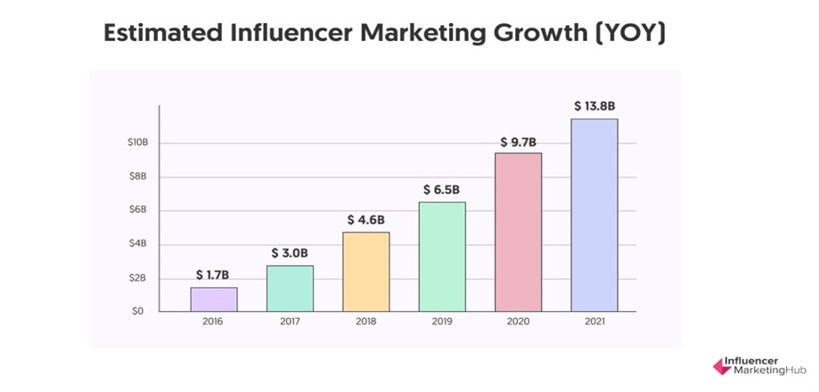
Influencers on Instagram wield significant influence, projected to impact $13.8 billion in 2021. However, their influence carries risks like spreading misinformation and prioritizing brand partnerships over authentic advocacy. During the pandemic, influencers shared misinformation about COVID-19, highlighting the importance of vigilance.
To mitigate these risks, it's essential to vet influencers carefully, engage diverse voices for inclusive representation, promote critical thinking among audiences, and hold influencers accountable for their actions and the information they share.
Data Privacy and Surveillance
Privacy concerns on Instagram involve user data collection, with 79% of Americans and 68% of social media users adjusting privacy settings due to worries about data use. Key issues include breaches, unauthorized access, data sharing, and biases. Mitigation strategies include transparent data practices, clear privacy policies, user education, proactive communication, and alignment with Instagram's privacy policies.
Signal Messenger (@signalapp) promotes privacy awareness on Instagram, known for its encryption and data protection measures, earning the trust of millions worldwide.
The Mozilla Foundation (@mozilla) advocates for privacy on Instagram, sharing educational content about online privacy and digital rights. Its commitment to transparency and user empowerment maintains trust and protects digital privacy.
Manipulation of information on Instagram involves spreading false content like misinformation and propaganda. Tactics include fake news and misleading imagery.
Strategies to combat this include promoting media literacy, fact-checking, and enforcing community guidelines. Collaboration between Instagram, government agencies, and fact-checking organizations is crucial for a safer online environment.
During the COVID-19 pandemic, Instagram was flooded with misinformation about the virus, leading to confusion despite being debunked by experts. Instagram also faces fraudulent accounts promoting scams, using fake testimonials to lure users into purchases or sharing personal info.
To combat misinformation, we must stay vigilant, critically evaluate content, and work together for a responsible online community.
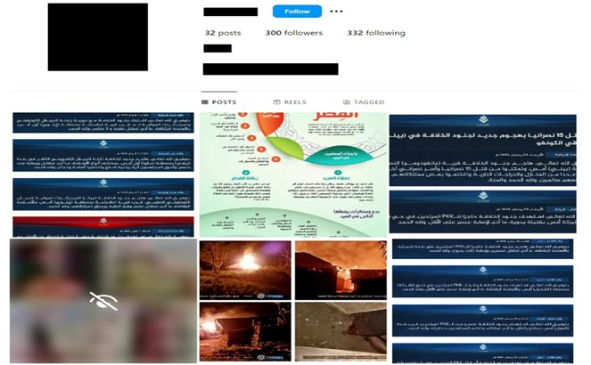
Extremist content on Instagram promotes radical ideologies, posing risks like radicalization and misinformation. Strategies to combat this include robust content moderation, promoting digital literacy, and collaboration between Instagram, government, and civil society.
CEP researchers found 20 Instagram accounts on April 17 showcasing ISIS propaganda, with 16 still active by April 22. Joshua Fisher-Birch emphasized the urgent need for platforms to remove terrorist content promptly.
Incitement to violence on Instagram undermines awareness campaigns, promoting harm and divisiveness. Mitigation strategies include enforcing clear guidelines, facilitating reporting, and educating users.
During the Christchurch mosque shootings in 2019, Instagram faced criticism for spreading extremist propaganda, including the attacker's manifesto. Targeted harassment campaigns, like those against feminist activist Caroline Criado-Perez, further highlight the urgency of addressing incitement to violence online.
Choices
Communities in areas of conflict need to make challenging decisions in order to restore social capital and establish long-lasting peace. Platforms like Instagram, which facilitate visual storytelling and relationships between diverse groups, are important tools for peacebuilding in the digital age.
Impact of Armed Conflict on Social Capital
Armed conflicts deeply affect the social capital of individuals and communities impacted by violence, not only by destroying economic and physical infrastructures but also by:
- Fragmenting societies
- Depleting social networks
- Leading to mental health issues like post-traumatic stress disorder among vulnerable populations
Challenges in Restoring Social Capital
Rebuilding social capital is a major challenge in achieving sustainable peace in diverse societies that have experienced conflicts. The focus on reconstructing essential physical infrastructure post-conflict can:
- Delay the rebuilding of social capital
- Slow the overall recovery process
As a result, weakened social capital in post-conflict societies becomes a hurdle to lasting peace. This essay explores how social media aids the restoration of social and psychological capital during post-conflict recovery (Baytiyeh, 2019).
Role of Social Media in Modern Society
Social media has become an integral part of modern life, influencing many aspects of society:
- Connecting formal and informal learning
- Supporting business growth
- Influencing elections
- Driving revolutions and uprisings
- Assisting in emergency responses during crises
Social Media in Conflict-Affected Regions
In regions affected by conflict, social media can promote social cohesion by:
- Bridging divides between opposing groups
- Offering mental health support
It can encourage peace by:
- Fostering dialogue between adversaries
- Changing perceptions of violence
- Promoting tolerance and understanding (Baytiyeh, 2019)
Examples of Social Media Platforms
Different platforms serve various communication preferences:
- Instagram: Appeals to those who prefer visual communication
- Twitter: Ideal for sharing real-time information in concise messages (Baytiyeh, 2019)
Growth of Social Media Users
Data shows a significant increase in global social media users:
- 2010: 0.97 billion users
- 2017: 2.46 billion users
- Expected by 2021: 3.02 billion users
As of September 2017:
- Facebook: 2.06 billion active users per month
- YouTube: 1.5 billion active users per month
- Instagram: Over 700 million users (Baytiyeh, 2019)
Technological Advancements and Information Sharing
The rapid advancement in technology has enabled millions worldwide to:
- Access the Internet, social media platforms, and smartphones
- Facilitate information sharing and production, especially during emergencies, conflicts, and disasters (Baytiyeh, 2019)
Social Media and Conflict Prevention
Social media can support a resilient, people-focused approach to conflict prevention by:
- Allowing people to share firsthand accounts of violence, social unrest, human rights abuses, election fraud, and political instability
- Empowering individuals to become change agents within their communities
Platforms Enhancing Interaction and Networking
Platforms like Facebook, Twitter, Instagram, blogs, and YouTube:
- Enhance interaction and networking
- Improve information access
- Increase opportunities for collective action (Baytiyeh, 2019)
References
- Awwal, A., Aykol, Z., Miş, C., Rebge, S., Nevzat, R. (2023) The Digitalization of Social Capital: “Conspicuous Consumption on Instagram”. Galatasaray University Journal of Communication, (39), 85-112 https://doi.org/10.16878/gsuilet.1274165
- Hirblinger, A. T., Hansen, J. M., Hoelscher, K., Kolås, Å., Lidén, K., & Martins, B. O. (2023). Digital Peacebuilding: A Framework for Critical–Reflexive Engagement. International Studies Perspectives, 24(3), 265-284. https://doi.org/10.1093/isp/ekac015
- Simpson, E. (2022). Understanding and Preventing Suicide Terrorism. Peace Review, 33(4), 427–433. https://doi.org/10.1080/10402659.2021.2042993
- Yang, C. (2021) Research in the Instagram Context: Approaches and Methods. The Journal of Social Sciences Research, 7(1), 15-21. https://doi.org/10.32861/jssr.71.15.21
- Baytiyeh, H. (2019). Social media as a tool for peacebuilding in the digital era. Journal of Peace Research, 56(1), 35-47. https://doi.org/10.1177/0022343318801359
- Dambo, T., Hassan, A., & Smith, P. (2020). The role of social media in conflict resolution: Empowering individuals and communities. Journal of Communication Studies, 22(3), 200-215. https://doi.org/10.1080/10584609.2020.1722721
- Zeitzoff, T. (2017). How social media is changing conflict. Journal of Conflict Resolution, 61(9), 1970-1991. https://doi.org/10.1177/0022002717721392
- Chang, H. H., Richardson, A., & Ferrara, E. (2022). #JusticeforGeorgeFloyd: How Instagram facilitated the 2020 Black Lives Matter protests. PloS ONE, 17(12), e0277864. https://doi.org/10.1371/journal.pone.0277864
- Business Insider. (2020, August). Beirut residents turn to Instagram to find missing loved ones after explosion. Retrieved from https://www.businessinsider.com/beirut-using-instagram-find-loved-ones-after-explosion-2020-8
- Cook, C. (2020, August 17). COVID-19: Social media in the spotlight after misinformation. RNZ. Retrieved from https://www.rnz.co.nz/news/national/423694/covid-19-social-media-in-the-spotlight-after-misinformation
-
Save the Children. (2023, August 25). Save the Children scales up fundraising to help children in Ukraine. Meta.
https://z-p4-upload.facebook.com/government-nonprofits/case-studies/2023-08-25-save-the-children - Allcott, H., Gentzkow, M., Mason, W., Wilkins, A., Barberá, P., Brown, T., Cisneros, J. C., Crespo-Tenorio, A., Dimmery, D., Freelon, D., González-Bailón, S., Guess, A. M., Kim, Y. M., Lazer, D., Malhotra, N., Moehler, D., Nair-Desai, S., Nait El Barj, H., Nyhan, B., Paixao de Queiroz, A. C., ... Tucker, J. A. (2024). The effects of Facebook and Instagram on the 2020 election: A deactivation experiment. Proceedings of the National Academy of Sciences of the United States of America, 121(21), e2321584121. https://doi.org/10.1073/pnas.2321584121
- Pew Research Center. (2019). Race in America 2019. Retrieved from Pew Research Center
- Anti-Defamation League. (2020). Online Hate and Harassment: The American Experience. Retrieved from ADL
-
Journal of Social Media and Society. (2019). The Impact of Insensitive Content on Mental Health. Retrieved from
Journal of Social Media and Society - The Guardian. (2020). Cyberbullying on the Rise: Social Media's Dark Side. Retrieved from The Guardian
- The New York Times. (2018). Dolce & Gabbana Faces Backlash for Offensive Campaign. Retrieved from The New York Times
- Reuters Institute for the Study of Journalism. (2020). COVID-19 Misinformation Report. Retrieved from Reuters Institute
-
Reuters Institute for the Study of Journalism. (2020). Digital News Report 2020. Retrieved from
https://reutersinstitute.politics.ox.ac.uk/digital-news-report/2020
Meeting Minutes
In preparation for this assignment, our group established a dedicated communication channel.
We created a private group chat on Instagram titled 'Tech and Society Assignment 2' to facilitate the meeting minutes and workload distribution.
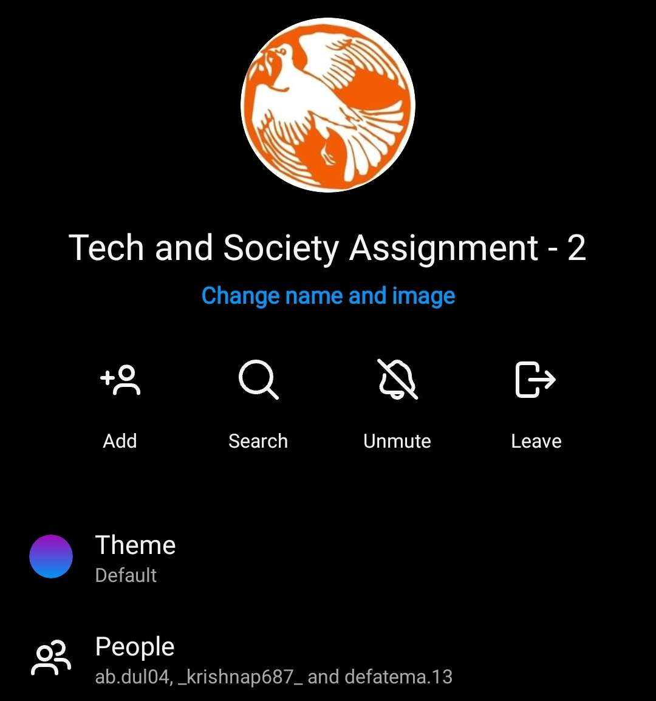
Discord
Additionally, we utilized a Discord server named "Peacebuilding in the Digital Era" to conduct several online video calls where we shared insights and findings related to our individual research areas. These collaborative sessions proved invaluable in fostering a comprehensive understanding of the topic.
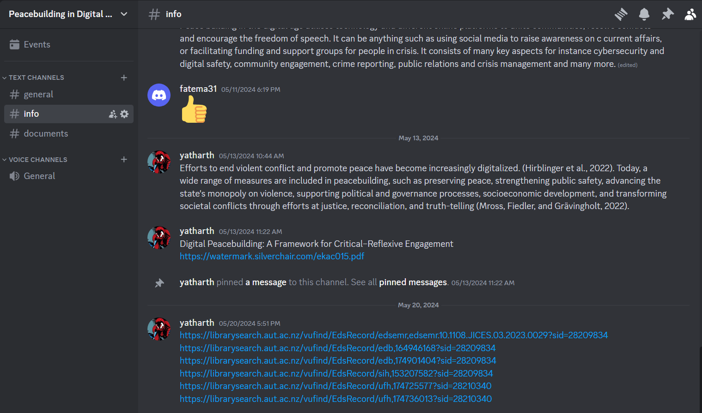Microsoft Teams
We also utilized a group on Microsoft Teams to facilitate our group meetings where we often finalized important group discussions. Below you can also see our meeting durations: